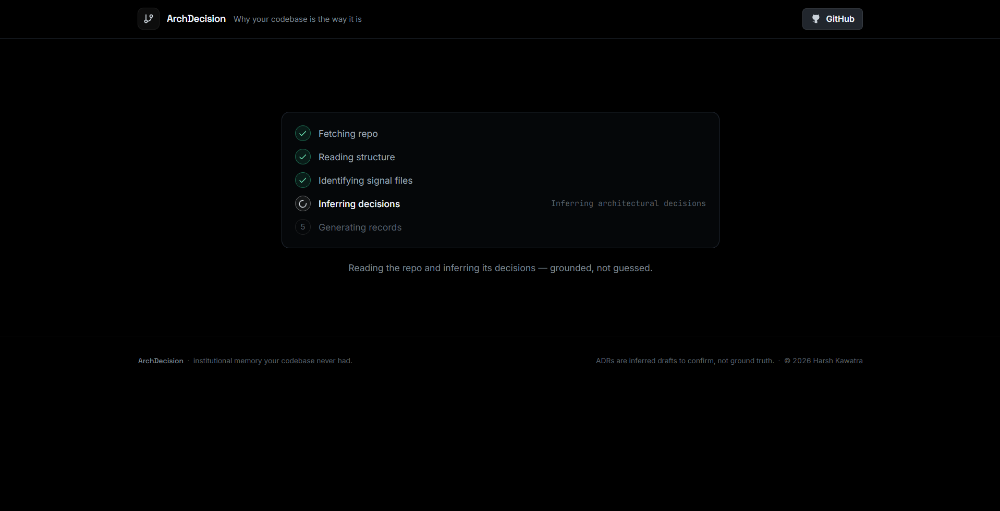
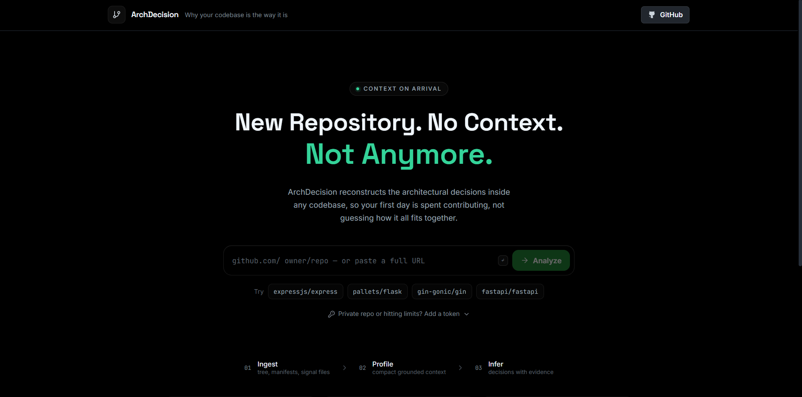
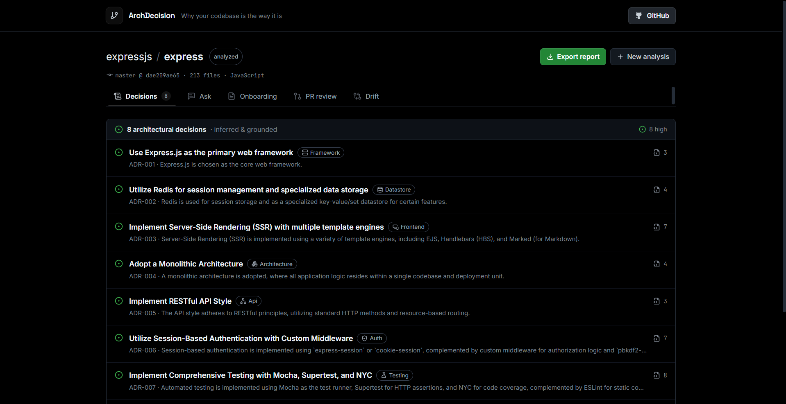
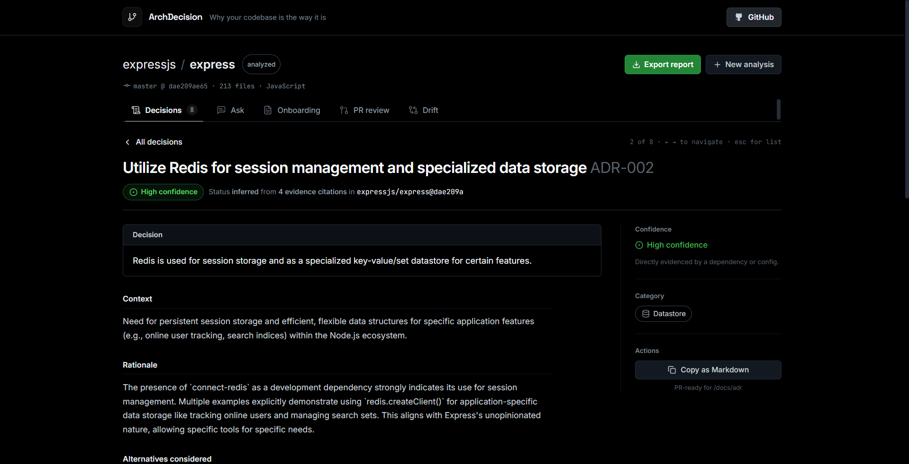
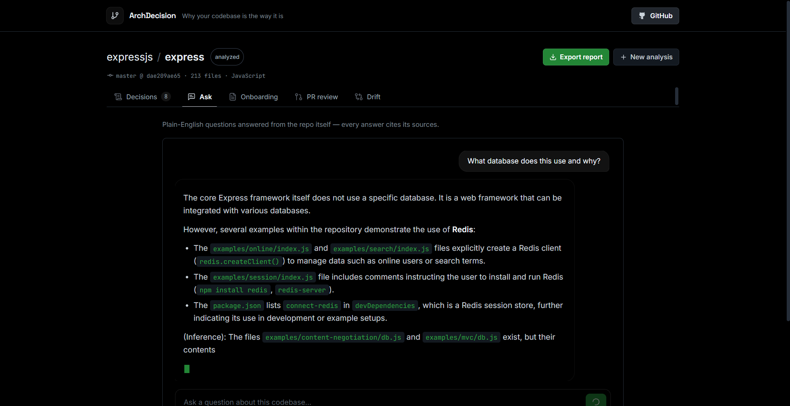
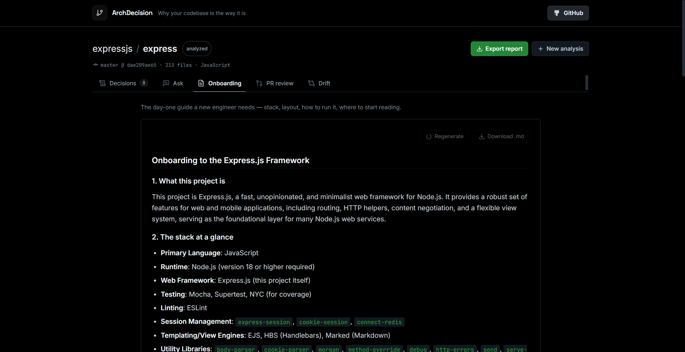
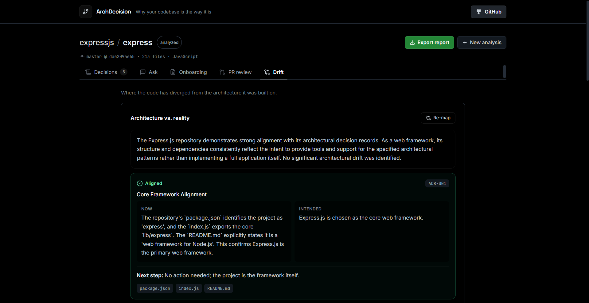

Architecture Decision Records are the known best practice for capturing this. Almost nobody writes them, because doing it by hand is tedious work with a delayed payoff. The context keeps disappearing, one departure at a time.
One source of truth never leaves: the code. Dependencies, file structure, configs, and entry points still hold the evidence for why the system looks the way it does. That evidence is just never read as a decision record.






